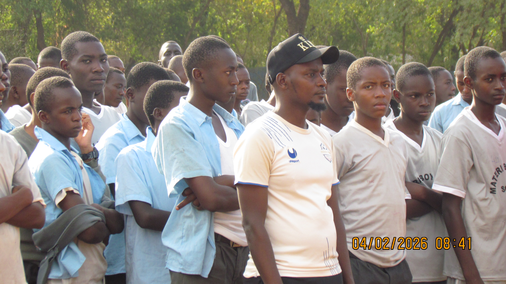
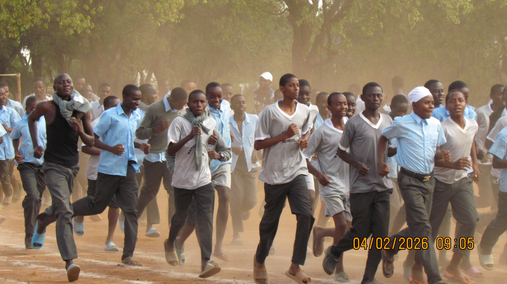
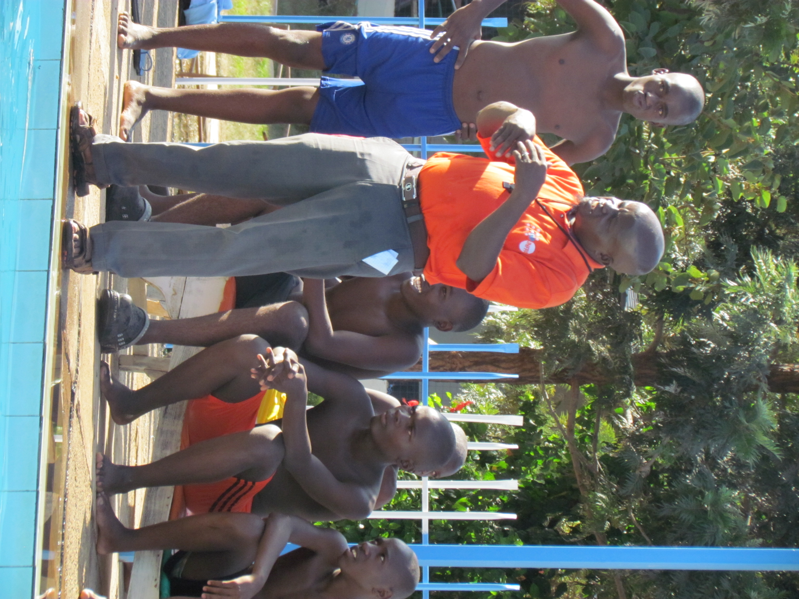

Pathways
A skills-based approach to learning that prepares students for further education, careers, and leadership.
Academics
Materi Boys is a CBE-centered senior school with a strong focus on STEM, Social Sciences, Arts, and Sport Science. Explore the pathways designed to build skills, confidence, and future-ready learners.
A skills-based approach to learning that prepares students for further education, careers, and leadership.

Pure Science and Applied Science with IT. Click or hover to view subject groups.
Maths, Physics, Chemistry, Biology.
Computer, Business, Agriculture, Building & Construction, Woodwork.

Humanities and social studies with a focus on history, citizenship, literature, and cultural understanding.
Geography, History & Citizenship, Literature and English, Religion, Fasihi ya Kiswahili.

Creative arts, performance, and sport science activities that support physical fitness, expression, and teamwork.
Drama, Music & Dance, Theater & Film, Soccer, Volleyball, Rugby, Basketball, Tennis.